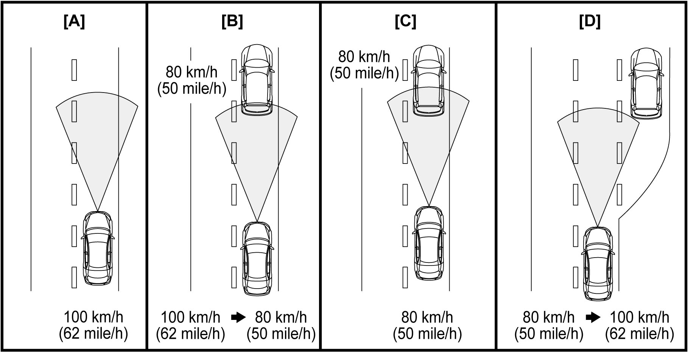
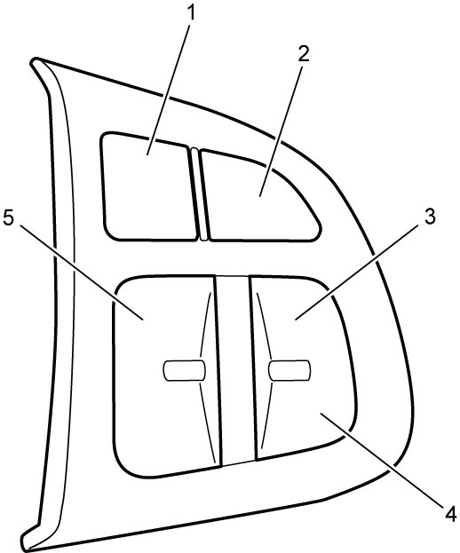

10A
| Description of Adaptive Cruise Control System Function |
Adaptive cruise control system controls vehicle speed and vehicle distance as follows.
| State of control | Basic control (as a set speed 100 km/h (62 mile/h)) |
|---|---|
| Constant-speed control [A] | Without detecting vehicle ahead
•Vehicle runs at the set speed without driver’s operation of accelerator pedal.
|
| Deceleration control [B] | When detecting a vehicle ahead running at lower speed than your vehicle during constant-speed control
•Corresponding to speed of the vehicle running ahead, deceleration control is activated using throttle valve control (M16A model / K14C model) or fuel injector control (D16AA model) and brake control. Brake light is turned on during this brake control.
•When the distance is getting too close due to sudden deceleration of the vehicle ahead or cutting-in of another vehicle, headway alert (sound of warning buzzer and indication of information display) will operate. |
| Constant headway gap control [C] | When following the vehicle ahead running slower than your vehicle
•Your vehicle runs corresponding to speed of the vehicle running ahead under “Constant headway gap control” keeping the set distance according to the vehicle speed.
|
| Acceleration control [D] | When the vehicle ahead running at lower speed than your vehicle disappears from detecting area
•At the moment the vehicle ahead disappears, your vehicle accelerates slowly up to the set speed and runs at a constant speed.
|

 "Expand image")
Effective Conditions for Control
If all of the following conditions are met, adaptive cruise control system operates.
•CRUISE (main) switch is turned ON.
•Vehicle is running at 40 km/h (25 mile/h) or higher speed.
•Gear shift lever is in 3rd or higher position. (M/T model)
•Select lever is D or M range. (A/T model / twin clutch system model)
•Brake pedal is released.
•Parking brake is released.
•Clutch pedal is released. (M/T model)
•ESP® OFF mode is not selected.
•ESP® is not operating.
•RBS is not operating.
•Driver side door is closed.
•Driver seat belt is fastened.
•Engine speed is within specified range.
•Adaptive cruise control system is in normal condition.
•Vehicle is running at 40 km/h (25 mile/h) or higher speed.
•Gear shift lever is in 3rd or higher position. (M/T model)
•Select lever is D or M range. (A/T model / twin clutch system model)
•Brake pedal is released.
•Parking brake is released.
•Clutch pedal is released. (M/T model)
•ESP® OFF mode is not selected.
•ESP® is not operating.
•RBS is not operating.
•Driver side door is closed.
•Driver seat belt is fastened.
•Engine speed is within specified range.
•Adaptive cruise control system is in normal condition.
Speed Set Function
When SET/– switch is pressed in execution state of the control, the speed obtained when the switch is pressed is stored as a set speed and the adaptive cruise control system starts control.
NOTE:
Set speed becomes a target speed in “Constant-speed control”, furthermore it becomes the maximum speed in “Constant headway gap control”.
Acceleration Function
When RES/+ switch is pressed for a momentarily, the vehicle speed is set to 1 km/h (1 mile/h) high and the switch is pressed for a long time, the vehicle speed is set to 5 km/h (5 mile/h) high under the control of the adaptive cruise control system and the vehicle is accelerated according to the new set speed.
NOTE:
During the “Constant headway gap control”, the vehicle is not accelerated but set speed can be changed.
Deceleration Function
When SET/– switch is pressed for a momentarily, the vehicle speed is set to 1 km/h (1 mile/h) low and the switch is pressed for a long time, the vehicle speed is set to 5 km/h (5 mile/h) low under the control of the adaptive cruise control system and the vehicle is decelerated according to the new set speed.
NOTE:
Deceleration function by SET/– switch is performed by throttle valve control (M16A model / K14C model) or fuel injector control (D16AA model) but brake control is not applied.
Cancel Function
When CANCEL switch is pressed under the control of the adaptive cruise control system, the control is canceled and the system becomes in a state of on standby.
Resume Function
When the vehicle control is on standby by cancel operation while the vehicle is running at 40 km/h (25 mile/h) or higher speed, pressing RES/+ switch allows the system to resume running the vehicle at the speed set before the control is canceled.
Headway Gap Setting Function
There are three modes of “Long”, “Middle” and “Short” in vehicle distance setting and, during the control of the adaptive cruise control system or in the state of standby, the mode can be changed by pressing the distance switch. RBS control module controls the vehicle in “Constant headway gap control” calculating the headway gap based on the vehicle distance setting and your vehicle speed.
NOTE:
When ignition is set “ON”, the headway gap is set in “Middle” mode.

 "Expand image")
| 1. | Distance switch | 4. | SET/– switch |
| 2. | CANCEL switch | 5. | CRUISE (main) switch |
| 3. | RES/+ switch |
Cancel Conditions
Adaptive cruise control is canceled under one of the following conditions.
•CRUISE (main) switch is turned OFF.
•*Vehicle speed becomes lower than 40 km/h (25 mile/h).
•*CANCEL switch is turned ON.
•*Gear shift lever is in 1st, 2nd or reverse position. (M/T model)
•*Gear shift lever is in neutral position for more than 10 seconds. (M/T model)
•*Select lever is shifted to other than D or M range. (A/T model / twin clutch system model)
•*Select lever is in M range and gear position is in 1st or 2nd position. (A/T model / twin clutch system model)
•*Brake pedal is depressed.
•Parking brake is applied.
•*Clutch pedal is depressed for more than 30 seconds. (M/T model)
•ESP® OFF mode is selected.
•*ESP® is operating.
•*RBS is operating.
•*Driver side door is opened.
•*Driver seat belt is unfastened.
•*Engine speed is out of specified range.
•Adaptive cruise control system is in abnormal condition.
•Speed limiter mode is selected.
•Precedence function for driver’s acceleration continues for 15 minutes.
•*Vehicle speed becomes lower than 40 km/h (25 mile/h).
•*CANCEL switch is turned ON.
•*Gear shift lever is in 1st, 2nd or reverse position. (M/T model)
•*Gear shift lever is in neutral position for more than 10 seconds. (M/T model)
•*Select lever is shifted to other than D or M range. (A/T model / twin clutch system model)
•*Select lever is in M range and gear position is in 1st or 2nd position. (A/T model / twin clutch system model)
•*Brake pedal is depressed.
•Parking brake is applied.
•*Clutch pedal is depressed for more than 30 seconds. (M/T model)
•ESP® OFF mode is selected.
•*ESP® is operating.
•*RBS is operating.
•*Driver side door is opened.
•*Driver seat belt is unfastened.
•*Engine speed is out of specified range.
•Adaptive cruise control system is in abnormal condition.
•Speed limiter mode is selected.
•Precedence function for driver’s acceleration continues for 15 minutes.
NOTE:
While the vehicle is running at 40 km/h (25 mile/h) or higher speed, if adaptive cruise control is canceled due to a condition with * (asterisk), the vehicle speed before the cancellation can be recovered by pressing RES/+ switch.
Precedence Function for Driver’s Acceleration
When accelerator pedal is depressed under the control of the adaptive cruise control system and if ECM judges that the extent of the depressing demands higher output, ECM sends accelerator override signal to RBS control module and controls throttle valve (M16A model / K14C model) or fuel injector (D16AA model) according to the depressing extent of the accelerator pedal. At this time, RBS control module cancels automatic braking if the vehicle is in “Deceleration control”. In this situation, set speed is maintained but headway alert does not operate.
Cornering Assist Function
While the vehicle is running under the control of the adaptive cruise control system, if RBS control module judges that the vehicle is entering a corner based on vehicle speed signal, steering angle signal and lateral G signal, the control module performs “Deceleration control”, and if exiting the corner is judged, “Acceleration control” is performed.
Overtaking Assist Function
While the vehicle is running under “Constant headway gap control” at 70 km/h (43 mile/h) or higher speed, if RBS control module judges overtaking operation based on signal from turn signal switch status through BCM, RBS control module accelerates the vehicle earlier than “Acceleration control” and starts searching new vehicle ahead.
Headway Alert Function
When the headway gap is getting too close due to sudden deceleration of the vehicle ahead or cutting-in of another vehicle and pressing collision hazard is judged, sounding warning buzzer and indication of information display warn the driver of the situation.